Happiness level of a country is very important to the development of the country, and influences the all social sectors such as health, economy, social stability, so on and so forth. To figure out how the general social wellness of a country influences its overall happiness level, and how happy a country is with respect to its neighbors, is important.
My central questions are: 1. How does the happiness level of a country relate to its social wellness factors? Would the social wellness of a country predict its happiness level? 2. Do countries that locate geographically close to each other also have similarity in terms of happiness levels?
My goal is to figure out how well can social factors, including GDP, social support, generosity and freedom, could forecast the happiness levels of a country in the world. In addition, we want to have a gist of how happy the global regions are, and whether the regions that are geographically close are closer in terms of social factor scores and happiness levels.
This project aims to 1. Generate a linear regression model to predict the level of happiness across countries in the world, using social factors associated with happiness; 2. Assess whether the regions with similar happiness levels and social characters are geographically close, across 2020 to 2021. Use hierarchical clustering to figure out if the clusters of regions belong to the same continent or are different in 2020 and 2021.
1. Datasets:
This project mainly uses two datasets: the 2020 and 2021 World Happiness Report datasets, both datasets are pulled from the World Happiness Report website, which provides numerical data related to the country’s level of happiness for countries over the world. The variables included in the datasets are: the adjusted happiness scores, log of the GDP per capita, the social support, healthy life expectancy at birth, freedom to make life choices, generosity and perception of corruption. All the variables are weighted numerical values, and the higher the value is, the more this country achieves in the corresponding variable. There is one unique variable: perception towards corruption, whose score indicates how severe the corruption within the government is, as perceived by the public.
The 2020 dataset has data for 153 countries, while the 2021 dataset has data for 149 countries. since the number of countries are different in happy 20 and happy 21, for now, because the number of country difference is less than 5%, I removed the countries that differ from each other from the dataset, so each dataset now has 148 countries.
There is no NA values in the 2021 world happiness dataset, which is desirable and indicates that there is no missing data.
## # A tibble: 10 × 2
## Region happyavg
## <chr> <dbl>
## 1 South Asia 4.44
## 2 Sub-Saharan Africa 4.49
## 3 Middle East and North Africa 5.22
## 4 Southeast Asia 5.41
## 5 Commonwealth of Independent States 5.47
## 6 East Asia 5.81
## 7 Latin America and Caribbean 5.91
## 8 Central and Eastern Europe 5.98
## 9 Western Europe 6.91
## 10 North America and ANZ 7.13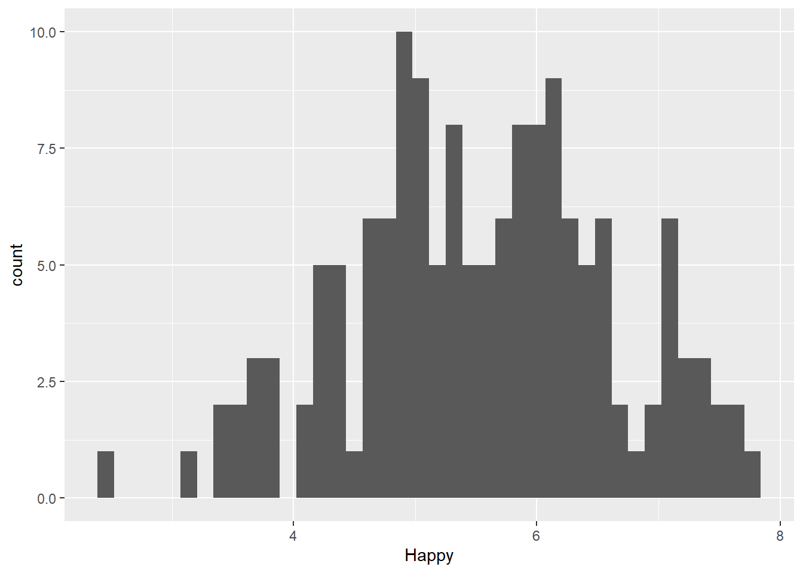
From the summary histogram, the happiness scores are approximately normally distributed, with most of the countries’ happiness scores at around 5 and 6, a few below 3 and above 7. This finding indicates that most of the countries have moderate happiness scores among the 148 countries.
The region with the highest happiness score are North America and Western Europe.
## # A tibble: 10 × 2
## Region happyavg
## <chr> <dbl>
## 1 Sub-Saharan Africa 4.38
## 2 South Asia 4.48
## 3 Middle East and North Africa 5.23
## 4 Commonwealth of Independent States 5.36
## 5 Southeast Asia 5.38
## 6 East Asia 5.71
## 7 Central and Eastern Europe 5.88
## 8 Latin America and Caribbean 5.98
## 9 Western Europe 6.90
## 10 North America and ANZ 7.17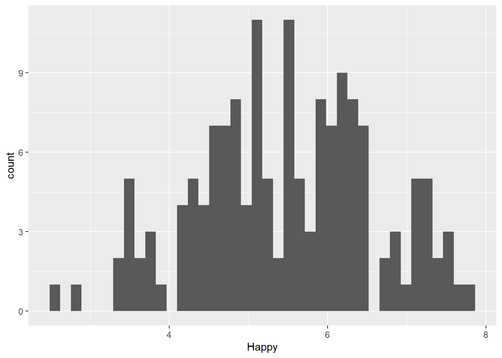
From the summary histogram, the 2020 happiness scores are approximately normally distributed, with most of the countries’ happiness scores at around 4 to 6, a few below 3 and above 7. This finding indicates that most of the countries have moderate happiness scores among the 153 countries. Compared to 2021 happiness score data, the countries in 2020 have in general lower happiness score, with more countries hitting the values lower than 4 and less countries higher than 7.
The regions with the highest happiness score are North America and Western Europe, in both 2020 and 2021.
Two major analysis methods will be used in this project to address the two central questions:
Linear Regression Model Fitting For the first question, we want to create a model that predicts the happiness score based on other social factors. For this part, I select the linear regression model to achieve the prediction, because it’s a long proven and simple statistical method to assess the relationship between variables. First, I examined the correlation between the social factors with happiness, to see which social factors are the most relevant in foreseeing the happiness level of countries. Then I fit the model linearly, that the 2020 data will be used as the training set, while the 2021 data will be used as the test set of the model to evaluate the fit. I compared two different models by including in different covariates, and comapred their values of goodness of fit.
Hierarchical and K-means Clustering For the second question, I first want to see whether there exists any clusters of regions based on the happiness scores and social factors. I then plot these clusters on the world map, to see whether these clusters of regions geographically locate close to each other, or the regions that belong to the same cluster locate far apart. The hierarchical clustering method is used, because it’s useful in dividing the regions into groups, so that it’s easy to visualize on the world map how closely located these clusters of regions are.
Part1 Linear Regression Model
First, let’s examine the strength of correlation of the factors with happiness is examined using pearson correlation matrices.
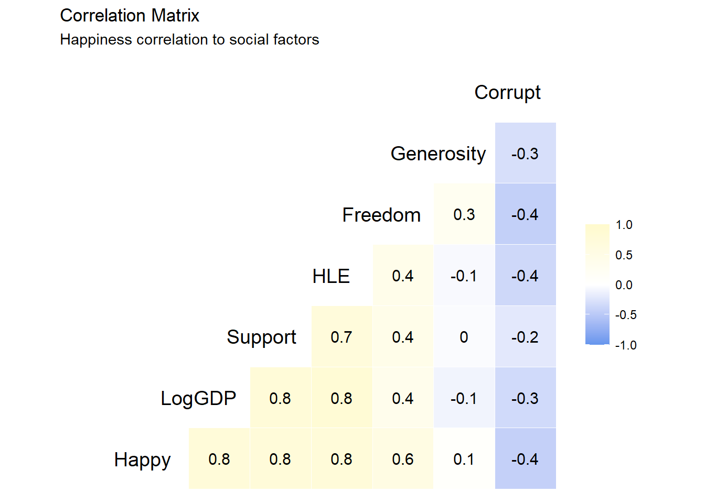
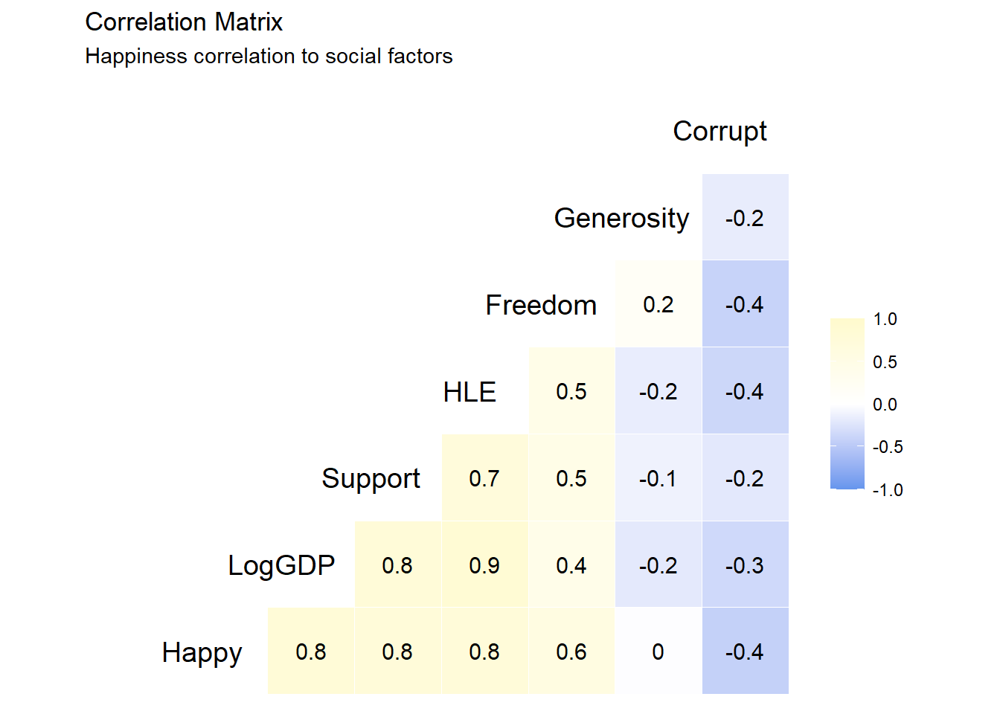
From the correlation matrices we can see that GDP, social support,
healthy life expectation are the factors that most strongly correlates
with the happiness levels of the countries, and all three indicates a
strong positive correlation with happiness. Freedom indicates a moderate
positive correlation with happiness score,
while the level of corruption indicates a moderate negative correlation
with happiness score. The level of generosity did not present a strong
correlation with happiness score.
Thus, for the final model, I chose LogGDP+Support+HLE+Freedom+Corrupt as the predictors for happiness score.
## [1] "This is the RMSE value of the first model: 0.535"## [1] "This is the R square value of the first model: 0.752"The RMSE value at 0.535 and the R square of 0.752 indicates that the model is in general good at predicting the happiness score for 2021 happiness score.
Now we see the correlation of the predicted data versus the real 2021 happiness score:
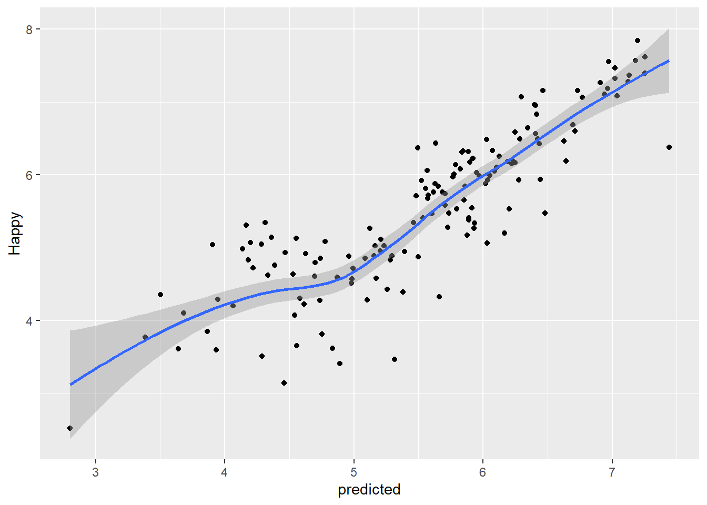
From the graph we can see that the prediction is generally accurate, with high correlation between the predicted values and the real happiness scores.
We can compare this model with another model that includes only the three most important variables, GDP, social support, healthy life expectation as the covariates.
## [1] "This is the RMSE value of the reduced model: 0.595"## [1] "This is the R squared value of the reduced model: 0.693"This new model results in RMSE of 0.595, which is bigger than the RMSE of the full model at 0.535, indicating that this model is not as good as the full model in terms of fitting. It also has adjusted R squared value of 0.693, which is smaller than the adjusted R squared value of the full model at 0.752, which further supports the point that this model is worse in fitting as compared to the full model.
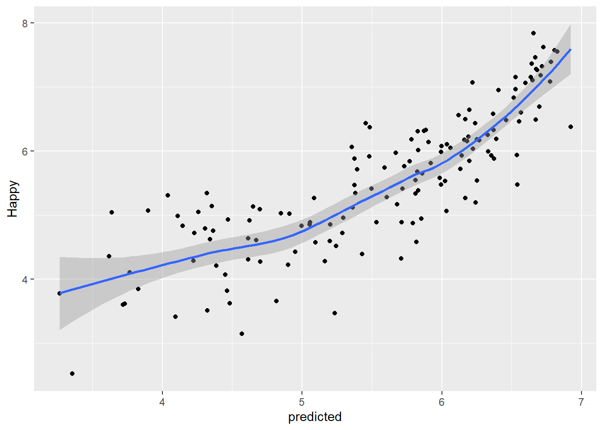
Looking at the predicted versus real happiness score value graph we can see that there are more scatters compared to the model with more covariates. Thus, the model that includes freedom and perception of corruption as covariates is better in predicting the happiness scores, and all the 5 covariates, LogGDP, Support, HLE, Freedom and Corrupt are positively correlated with happiness score, leading to a strong positive correlation.
Part 2 Clustering Analysis
First, generate dataframes of the average of by regions.
Part 2-1 Hierarchical clustering
Next, generate clusters of the regions based on the distance of each of the social factors:
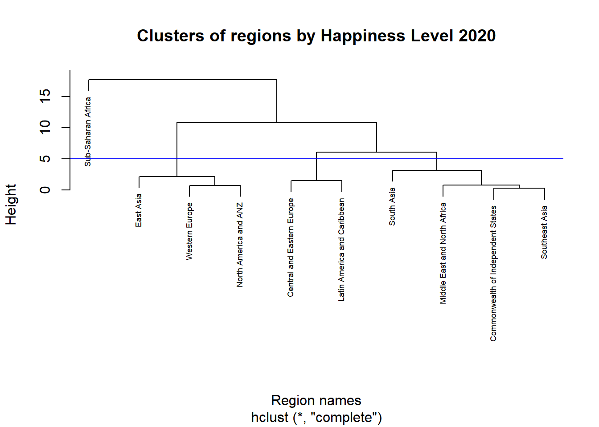
From the 2020 dendrogram, there are 4 main clusters as divided by the blue line:
The first cluster: East Asia, Western Europe, North America and ANZ (Australia and New Zealand)
The second cluster: South Asia, Middle East and North Africa, Commonwealth and Independent States, Southeast Asia.
The third cluster: Central and Eastern Europe, Latin America and Caribbean.
The second and the third cluster are closer to each other in terms of the social factors and happiness scores.
The forth cluster, which is also the cluster farthest away from the other three clusters, is Sub-saharan Africa.
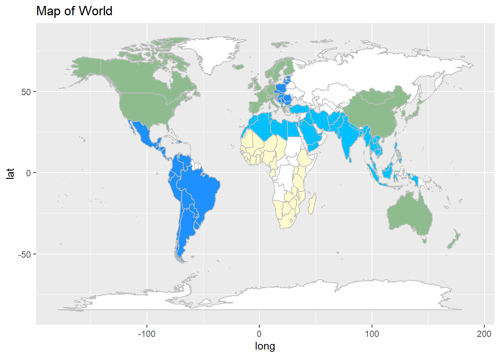
When plotting the 2020 dendrogram on the world map, it shows consistent colorings for continents such as the African and American continent, and the colorings usually spans may neighboring countries. It’s interesting how eastern European and south American countries belong to the same cluster, despite the geographical distance.
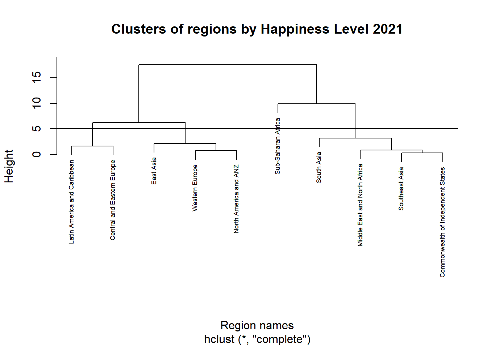
From the 2021 dendrogram, there are 4 main clusters as divided by the line:
The first cluster: East Asia, Western Europe, North America and ANZ (Australia and New Zealand)
The second cluster: South Asia, Middle East and North Africa, Commonwealth and Independent States, Southeast Asia.
The third cluster: Central and Eastern Europe, Latin America and Caribbean.
The forth cluster, is Sub-Saharan Africa.
For 2021 data, the first and third clusters are closer to each other, while the second and the forth clusters are closer to each other.
It’s worth noticing that the regions within each cluster didn’t change from 2020 to 2021.
From the plots above, we can see that: Under hierarchical clustering:
The clusters of regions with similarity in happiness score and social factor data did not change much from 2020 to 2021, as shown on the map.
The regions that belong to the same cluster, or have similar happiness level, do not necessarily locate close to each other or on the same continent. For countries on the American continent, it’s clear that the North American countries are similar in happiness and socio-economic levels as a cluster, while south American countries form a cluster as well. Among Asian countries, however, the happiness levels vary a lot from subregions, such that the South Asian and Southeast Asian have very different happiness scores as compared to east Asian countries. However, each cluster tends to have some degree of spread and spanning across the same continent, including at least multiple neighboring countries at a time.
Now let’s compare the results of hierarchical clustering to k-means clustering:
Part 2-2 K-means clustering
## Sub-Saharan Africa South Asia
## 2 4
## Middle East and North Africa Commonwealth of Independent States
## 4 4
## Southeast Asia East Asia
## 4 1
## Central and Eastern Europe Latin America and Caribbean
## 3 3
## Western Europe North America and ANZ
## 1 1For k-means clustering with 4 clusters, we can see that: for 2020 data,
The first cluster:
South Asia, Middle East and North Africa, Commonwealth and Independent States, Southeast Asia.
The second cluster, is Sub-Saharan Africa.
The third cluster: East Asia, Western Europe, North America and ANZ (Australia and New Zealand)
The fourth cluster: Central and Eastern Europe, Latin America and Caribbean.
The division of regions by clusters is the same as using hierarchical clustering.
Now visualize that on the world map:
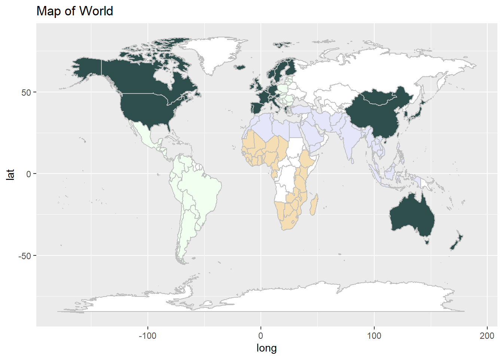
As can see from the world map, for year 2020, the 4 clusters divided by the k-means approach are the same as the 4 clusters generated by the hierarchical approach.
Now let’s look at the 2021 data:
## South Asia Sub-Saharan Africa
## 1 4
## Middle East and North Africa Southeast Asia
## 1 1
## Commonwealth of Independent States East Asia
## 1 2
## Latin America and Caribbean Central and Eastern Europe
## 3 3
## Western Europe North America and ANZ
## 2 2For k-means clustering with 4 clusters, we can see that: for 2021 data,
The first cluster: Sub-Saharan Africa
The second cluster, South Asia
the third cluster: Middle East and North Africa, Commonwealth and Independent States, Southeast Asia, Central and Eastern Europe, Latin America and Caribbean.
The fourth cluster: East Asia, Western Europe, North America and ANZ (Australia and New Zealand)
This time, the clusters have different contents as compared to the hierarchical approach on 2021 data, that South Asia itself consists a single cluster, while Middle East and North Africa, Commonwealth and Independent States, Southeast Asia are put into the same cluster with Central and Eastern Europe, Latin America and Caribbean.
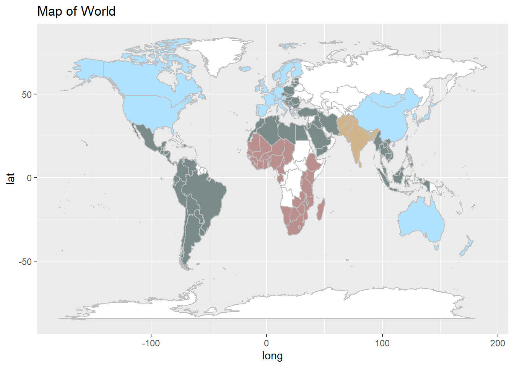
## # A tibble: 10 × 8
## Region Happy…¹ GDPavg Suppo…² HLEavg Freed…³ Genero…⁴ Corru…⁵
## <chr> <dbl> <dbl> <dbl> <dbl> <dbl> <dbl> <dbl>
## 1 South Asia 4.44 8.68 0.703 62.7 0.765 0.0427 0.797
## 2 Sub-Saharan Africa 4.49 8.08 0.697 55.9 0.723 0.0134 0.766
## 3 Middle East and North… 5.22 9.67 0.798 65.6 0.716 -0.0798 0.762
## 4 Southeast Asia 5.41 9.42 0.820 64.9 0.909 0.156 0.709
## 5 Commonwealth of Indep… 5.47 9.40 0.872 65.0 0.817 -0.036 0.725
## 6 East Asia 5.81 10.4 0.860 71.3 0.764 -0.0623 0.683
## 7 Latin America and Car… 5.91 9.37 0.840 67.1 0.832 -0.0677 0.793
## 8 Central and Eastern E… 6.04 10.1 0.893 68.5 0.800 -0.0863 0.847
## 9 Western Europe 6.91 10.8 0.914 73.0 0.859 -0.00319 0.523
## 10 North America and ANZ 7.13 10.8 0.934 72.3 0.899 0.12 0.449
## # … with abbreviated variable names ¹Happyavg, ²Supportavg, ³Freedomavg,
## # ⁴Generosityavg, ⁵CorruptavgBy looking at the social factors data of 2021, the first and second clusters, Sub-Saharan Africa and South Asia, have the lowest happiness score values, with relatively low GDP, Health life expectancy and Social Support, but relatively high or average in other wellness indicators. This explains why South Asia is separated from the cluster with other regions for the k-means clustering approach, because k-means clustering is better in ruling out clusters with different sizes as compared to hierarchical clustering. so despite South Asia is similar in other regions in terms of generosity and corrup scores, it is still singled out as a cluster with low happiness score, using k-means approach.
Our two research questions are,
How does the happiness level of a country relate to its social wellness factors? Would the social wellness of a country predict its happiness level?
Do regions that locate geographically close to each other also have similarity in terms of happiness levels?
To answer the first question, I used linear regression model fitting, using the 2020 data as the training set and the 2021 data as the test set, and it turns out that the linear regression model that includes the 5 covariates, LogGDP, Support, HLE, Freedom and Corrupt is an optimal model that can predict the happiness with relatively high accuracy, with a small RMSE value. And all 5 covariates are positively and strongly correlated with happiness score.
For the second question, I used hierarchical clustering and k-means clustering to figure out whether the global regions that locate geographically close to each other are also close in happiness level, using the average scores of social wellness factors by region in 2020 and 2021 as inputs, generating the clusters and then visualize the countries that belong to the same cluster by giving them same color on the world map.
Under hierarchical clustering, I found out that the clusters of regions similar in happiness level did not change much from 2020 to 2021, and that the regions that belong to the same cluster, or have similar happiness level, do not necessarily locate close to each other or on the same continent, but, each cluster tends to spread across the at least multiple neighboring countries at the same continent. The k-means clustering results for 2020 is the same as the hierarchical clustering results, but for 2021 data, South Asia is ruled out as a single cluster, because its happiness score is the lowest in 2021, despite its similarity with other regions in some other social factors like generosity and perception of corruption, and this difference is caught by the k-means clustering approach. But in general, the division of global regions in terms of happiness level does not change much from 2020 to 2021, and that neighboring countries in African, North and South American tend to have similarities in social wellness, while in Asia, the differences in social wellness factors could be larger between different parts of Asian continent.
My approaches generally answered the two questions very well, because 1. the resulting regression model generates a good fit for the data and the prediction achieves relatively high accuracy. 2. For the clustering analysis, the outcomes are relatively consistent and coherent across differnet years and clustering approaches, and by plotting the clustering results on the world map, my approach is easy to visualize and interpret.
If I have more time, I would include in more datasets, such as the 2018 and 2019 datasets as well, to see whether the occurrences of COVID-19 has effects on the world happiness levels across countries. I would also consider adding in COVID infection data by country, to see whether that could also be a covariate that helps predict the happiness score by country.
The sources of 2020 and 2021 World Happiness Score data:
Helliwell, John F., et al. “World Happiness Report 2020.” The World Happiness Report, 20 Mar. 2020, worldhappiness.report/ed/2020/.
Helliwell, John F., et al. “World Happiness Report 2021.” The World Happiness Report, 20 Mar. 2021, worldhappiness.report/ed/2021/.
knitr::opts_chunk$set(warning=FALSE, message = FALSE, echo=FALSE)
library(tidyverse)
library(dplyr)
library(dslabs)
library(caret)
library(ggplot2)
library(ggrepel)
library(plm)
#explore the world happiness score dataset
happy21 <- read_csv('world-happiness-report-2021.csv')
#colnames(happy21)
#From the summary statistics: we can see that there is no NA values in the 2021 world happiness dataset, which is desirable and indicates that there is no missing data.
summary(happy21)
#select the wanted columns and rename them in 2021 dataset
happy21 <- happy21 |> select('Country name','Regional indicator','Ladder score','Logged GDP per capita', 'Social support', 'Healthy life expectancy', 'Freedom to make life choices', 'Generosity','Perceptions of corruption' )
colnames(happy21) <- c('Country', 'Region','Happy', 'LogGDP','Support','HLE','Freedom','Generosity', 'Corrupt')
#HLE stands for health life expectancy
#make sure that the countries in this dataset are unique from each other
length(unique(happy21$Country)) == nrow(happy21)
#EDA
# first make a histogram of average score of happiness by country and by region
eda21 <- happy21 |> group_by(Region) |> summarize(happyavg = mean(Happy)) |> arrange(happyavg)
print(eda21)
happy21 |> ggplot() + geom_histogram(aes(x=Happy), bins=40)
#Now preprocess the 2020 happiness data:
#2020 happiness data
happy20 <- read_csv('WHR20_DataForFigure2.1.csv')
happy20 <- happy20 |> select('Country name','Regional indicator','Ladder score', 'Logged GDP per capita', 'Social support', 'Healthy life expectancy', 'Freedom to make life choices', 'Generosity','Perceptions of corruption' )
colnames(happy20) <- c('Country', 'Region','Happy', 'LogGDP','Support','HLE','Freedom','Generosity', 'Corrupt')
#EDA
# first make a histogram of average have a general view of happiness by country and by region
region20<- happy20 |> group_by(Region) |> summarize(happyavg = mean(Happy)) |> arrange(happyavg)
print(region20)
happy20 |> ggplot() + geom_histogram(aes(x=Happy), bins=40)
#nrow(happy20)
#nrow(happy21)
#since the number of countries are different in happy 20 and happy 21, for now, because the number of country difference is less than 5%, let's remove the countries that differ from each other.
happy20 <- happy20 |> filter((Country %in% happy21$Country))
happy21 <- happy21 |> filter((Country %in% happy20$Country))
library(GGally)
happy20numeric <- happy20 |> select(-c('Country', "Region"))
happy21numeric <- happy21 |> select(-c('Country', "Region"))
ggcorr(happy20,
method = c("everything", "pearson"),
size = 5, hjust = 0.77,
low = 'cornflowerblue', mid = 'white', high = "lemonchiffon",
label = TRUE, label_size = 4,
layout.exp = 1) +
labs(title = 'Correlation Matrix',
subtitle = 'Happiness correlation to social factors')
ggcorr(happy21,
method = c("everything", "pearson"),
size = 5, hjust = 0.77,
low = 'cornflowerblue', mid = 'white', high = "lemonchiffon",
label = TRUE, label_size = 4,
layout.exp = 1) +
labs(title = 'Correlation Matrix',
subtitle = 'Happiness correlation to social factors')
library(caret)
# use the 2020 happiness data as the training set and the 2021 data as the test set.
#take a look at the summary of the model fit
fit1 <- lm( Happy ~ LogGDP+Support+HLE+Freedom+Corrupt, data = happy20)
#summary(fit1)
y_hat1 <- predict(fit1, newdata = happy21)
#see the RMSE
rmse1 <- sqrt(mean((y_hat1-happy21$Happy)^2))
paste0('This is the RMSE value of the first model: ',round(rmse1, 3))
#R-square
r1<- R2(y_hat1, happy21$Happy)
paste0('This is the R square value of the first model: ',round(r1, 3))
modeldata<- happy21
modeldata$predicted <- y_hat1
modeldata |> ggplot(aes(predicted, Happy)) + geom_point() + geom_smooth()
fit2 <- lm( Happy ~ LogGDP+Support+HLE, data = happy20)
#summary(fit2)
y_hat2 <- predict(fit2, newdata = happy21)
rmse2 <- sqrt(mean((y_hat2-happy21$Happy)^2))
paste0('This is the RMSE value of the reduced model: ',round(rmse2, 3))
r2 <- R2(y_hat2, happy21$Happy)
paste0('This is the R squared value of the reduced model: ',round(r2, 3))
modeldata2<- happy21
modeldata2$predicted <- y_hat2
modeldata2 |> ggplot(aes(predicted, Happy)) + geom_point() + geom_smooth()
region20all <- happy20 |> group_by(Region) |>
summarize(Happyavg = mean(Happy),
GDPavg = mean(LogGDP),
Supportavg=mean(Support),
HLEavg = mean(HLE),
Freedomavg = mean(Freedom),
Generosityavg = mean(Generosity),
Corruptavg = mean(Corrupt)) |>
arrange(Happyavg)
region21all <- happy21 |> group_by(Region) |>
summarize(Happyavg = mean(Happy),
GDPavg = mean(LogGDP),
Supportavg=mean(Support),
HLEavg = mean(HLE),
Freedomavg = mean(Freedom),
Generosityavg = mean(Generosity),
Corruptavg = mean(Corrupt)) |>
arrange(Happyavg)
region21alltibble <- region21all
row20 <- region20all$Region
region20all <- region20all[,-1] |> as.matrix()
rownames(region20all) <- row20
row21 <- region21all$Region
region21all <- region21all[,-1] |> as.matrix()
rownames(region21all) <- row21
d20 <- dist(region20all)
d21 <- dist(region21all)
h20 <- hclust(d20)
h21 <- hclust(d21)
plot(h20, cex = 0.55, main = "Clusters of regions by Happiness Level 2020", xlab = "Region names")
abline(h=5, col="blue")
#Now get the vectors of countries that belong to each cluster:
cluster1_2020 <- happy20 |> filter(Region %in% c('East Asia', 'Western Europe', 'North America and ANZ')) |> select('Country')
cluster2_2020 <- happy20 |> filter(Region %in% c('South Asia', 'Middle East and North Africa', 'Commonwealth and Independent States', 'Southeast Asia')) |> select('Country')
cluster3_2020 <- happy20 |> filter(Region %in% c('Central and Eastern Europe', 'Latin America and Caribbean')) |> select('Country')
cluster4_2020 <- happy20 |> filter(Region %in% c('Sub-Saharan Africa')) |> select('Country')
#Plot the results on the world map
thismap = map_data("world")
cluster1_2020<- cluster1_2020 |> mutate(
Country1 = case_when(Country =='Taiwan Province of China' ~ 'Taiwan',
Country == 'United States'~ 'USA',
Country == 'United Kingdom'~ 'UK',
TRUE ~ Country))
cluster3_2020 <- cluster3_2020 |> mutate(Country1 = Country)
cluster2_2020 <- cluster2_2020 |> mutate(Country1 =
case_when(
Country =='Palestinian Territories' ~ 'Palestine',
TRUE ~ Country))
cluster4_2020 <- cluster4_2020 |> mutate(Country1 = Country)
#set colors by the clusters of countries
thismap <- mutate(thismap, fill =ifelse(region %in% cluster1_2020$Country1 ,'darkseagreen',
ifelse(region %in% cluster2_2020$Country1, "deepskyblue",
ifelse(region %in% cluster3_2020$Country1,"dodgerblue",
ifelse(region %in% cluster4_2020$Country1,"lemonchiffon",
ifelse(str_detect('Congo', region),'lemonchiffon','white'))))))
# set the colors
ggplot(thismap, aes(long, lat, fill = fill, group=group)) +
geom_polygon(colour="gray") + ggtitle("Map of World") +
scale_fill_identity()
# the 2021 dendrogram:
plot(h21, cex = 0.55, main = "Clusters of regions by Happiness Level 2021", xlab = "Region names")
abline(h=5, color = 'blue')
cluster1_2021 <- happy21 |> filter(Region %in% c('East Asia', 'Western Europe', 'North America and ANZ')) |> select('Country')
cluster2_2021 <- happy21 |> filter(Region %in% c('South Asia', 'Middle East and North Africa', 'Commonwealth and Independent States', 'Southeast Asia')) |> select('Country')
cluster3_2021 <- happy21 |> filter(Region %in% c('Central and Eastern Europe', 'Latin America and Caribbean')) |> select('Country')
cluster4_2021 <- happy21 |> filter(Region %in% c('Sub-Saharan Africa')) |> select('Country')
thismap = map_data("world")
cluster1_2021<- cluster1_2021 |> mutate(
Country1 = case_when(Country =='Taiwan Province of China' ~ 'Taiwan',
Country == 'United States'~ 'USA',
Country == 'United Kingdom'~ 'UK',
TRUE ~ Country))
cluster3_2021 <- cluster3_2021 |> mutate(Country1 = Country)
cluster2_2021 <- cluster2_2021 |> mutate(Country1 =
case_when(
Country =='Palestinian Territories' ~ 'Palestine',
TRUE ~ Country))
cluster4_2021 <- cluster4_2021 |> mutate(Country1 = Country)
#set colors by the clusters of countries
thismap <- mutate(thismap, fill =ifelse(region %in% cluster1_2021$Country1 ,'darkseagreen',
ifelse(region %in% cluster2_2021$Country1, "deepskyblue",
ifelse(region %in% cluster3_2021$Country1,"dodgerblue",
ifelse(region %in% cluster4_2021$Country1,"lemonchiffon",
ifelse(str_detect('Congo', region),'lemonchiffon','white'))))))
# set the colors
ggplot(thismap, aes(long, lat, fill = fill, group=group)) +
geom_polygon(colour="gray") + ggtitle("Map of World") +
scale_fill_identity()
k20 <- kmeans(region20all, centers = 4)
k20$cluster
cluster3_2020 <- happy20 |> filter(Region %in% c('East Asia', 'Western Europe', 'North America and ANZ')) |> select('Country')
cluster1_2020 <- happy20 |> filter(Region %in% c('South Asia', 'Middle East and North Africa', 'Commonwealth and Independent States', 'Southeast Asia')) |> select('Country')
cluster4_2020 <- happy20 |> filter(Region %in% c('Central and Eastern Europe', 'Latin America and Caribbean')) |> select('Country')
cluster2_2020 <- happy20 |> filter(Region %in% c('Sub-Saharan Africa')) |> select('Country')
thismap = map_data("world")
cluster3_2020<- cluster3_2020 |> mutate(
Country1 = case_when(Country =='Taiwan Province of China' ~ 'Taiwan',
Country == 'United States'~ 'USA',
Country == 'United Kingdom'~ 'UK',
TRUE ~ Country))
cluster1_2020 <- cluster1_2020 |> mutate(Country1 =
case_when(
Country =='Palestinian Territories' ~ 'Palestine',
TRUE ~ Country))
cluster2_2020 <- cluster2_2020 |> mutate(Country1 = Country)
cluster4_2020 <- cluster4_2020 |> mutate(Country1 = Country)
#set colors by the clusters of countries
thismap <- mutate(thismap, fill =ifelse(region %in% cluster1_2020$Country1 ,'lavender',
ifelse(region %in% cluster2_2020$Country1, "wheat",
ifelse(region %in% cluster3_2020$Country1,"darkslategrey",
ifelse(region %in% cluster4_2020$Country1,"honeydew",
ifelse(str_detect('Congo', region),'wheat','white'))))))
# set the colors
ggplot(thismap, aes(long, lat, fill = fill, group=group)) +
geom_polygon(colour="gray") + ggtitle("Map of World") +
scale_fill_identity()
k21 <- kmeans(region21all, centers = 4)
k21$cluster
cluster4_2021 <- happy21 |> filter(Region %in% c('East Asia', 'Western Europe', 'North America and ANZ')) |> select('Country')
cluster2_2021 <- happy21 |> filter(Region %in% c('South Asia')) |> select('Country')
cluster3_2021 <- happy21 |> filter(Region %in% c('Central and Eastern Europe', 'Latin America and Caribbean', 'Middle East and North Africa', 'Commonwealth and Independent States', 'Southeast Asia')) |> select('Country')
cluster1_2021 <- happy21 |> filter(Region %in% c('Sub-Saharan Africa')) |> select('Country')
thismap = map_data("world")
cluster4_2021 <- cluster4_2021 |> mutate(
Country1 = case_when(Country =='Taiwan Province of China' ~ 'Taiwan',
Country == 'United States'~ 'USA',
Country == 'United Kingdom'~ 'UK',
TRUE ~ Country))
cluster3_2021 <- cluster3_2021 |> mutate(Country1 =
case_when(
Country =='Palestinian Territories' ~ 'Palestine',
TRUE ~ Country))
cluster2_2021 <- cluster2_2021 |> mutate(Country1 = Country)
cluster1_2021 <- cluster1_2021 |> mutate(Country1 = Country)
#set colors by the clusters of countries
thismap <- mutate(thismap, fill =ifelse(region %in% cluster1_2021$Country1 ,'rosybrown',
ifelse(region %in% cluster2_2021$Country1, "tan",
ifelse(region %in% cluster3_2021$Country1,"lightcyan4",
ifelse(region %in% cluster4_2021$Country1,"lightskyblue1",
ifelse(str_detect('Congo', region),'rosybrown','white'))))))
# set the colors
ggplot(thismap, aes(long, lat, fill = fill, group=group)) +
geom_polygon(colour="gray") + ggtitle("Map of World") +
scale_fill_identity()
print(region21alltibble)